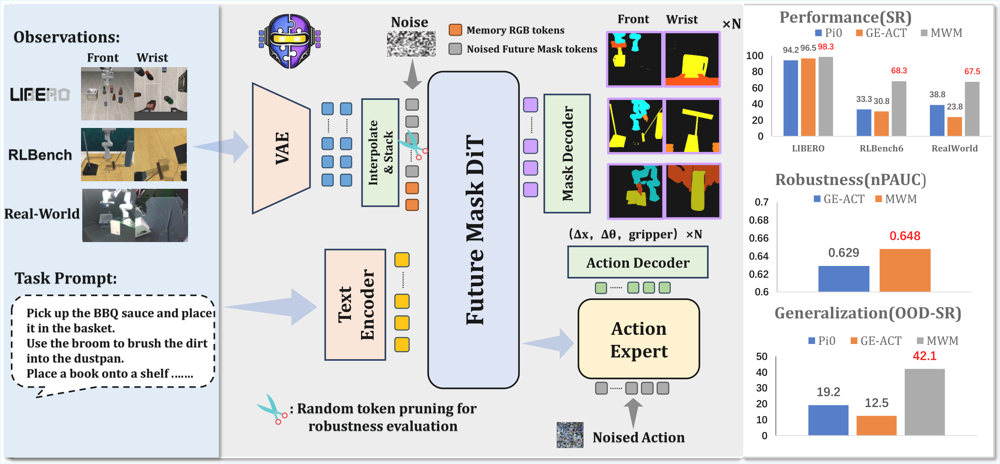
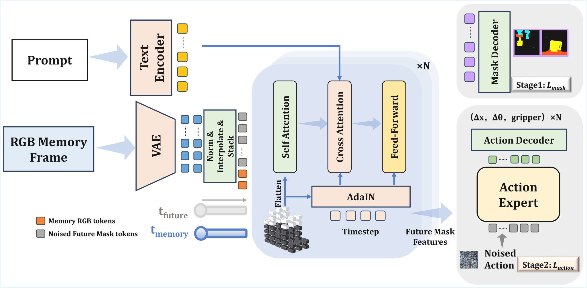
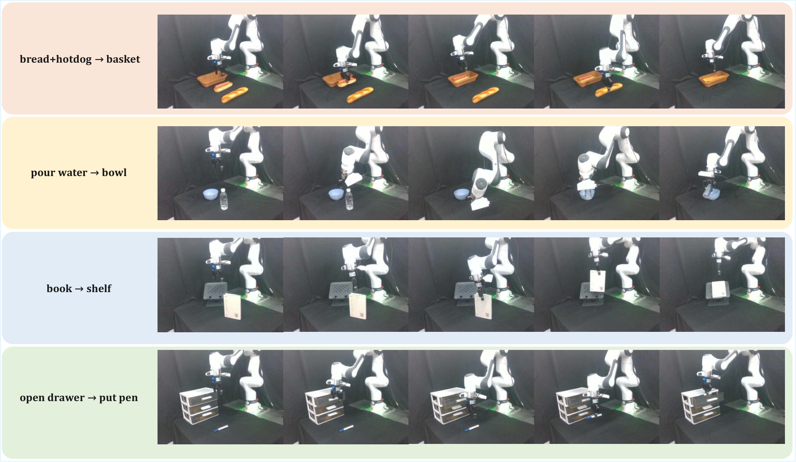
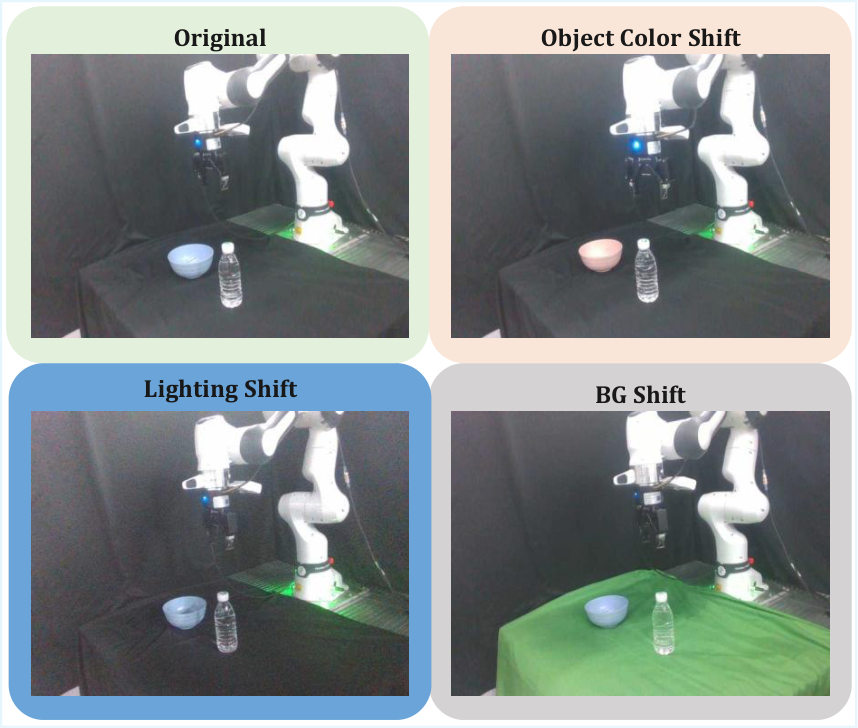
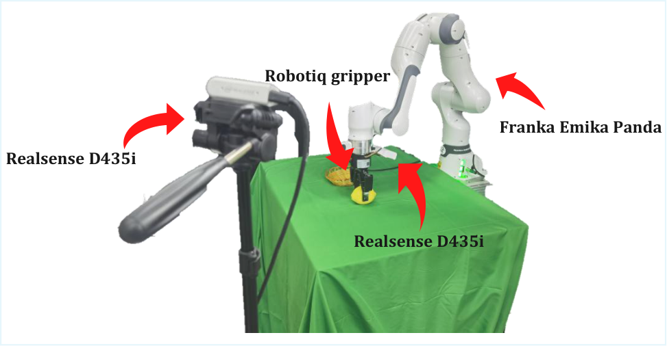

Mask World Model: Predicting What Matters for Robust Robot Policy Learning
1. 论文速览
难度评级：★★★★☆。需要熟悉 robot imitation learning、video diffusion/world model、diffusion policy、VAE latent 和 transformer token 表示。
关键词：Mask World ModelSemantic BottleneckVideo DiffusionDiffusion PolicyRobot Generalization
| 阅读定位项 | 内容 |
|---|---|
| 论文要解决什么 | RGB 视频 world model 会花容量预测纹理、光照、背景等 nuisance variables，导致闭环控制中 appearance-driven drift 和泛化脆弱。 |
| 作者的方法抓手 | 训练期用语义 mask 作为未来预测目标，形成 geometric information bottleneck；部署期不需要外部分割器，只输入 raw multi-view RGB。 |
| 最重要的结果 | MWM 在 LIBERO 平均成功率 98.3%，RLBench 平均 68.3%，真实 Franka 四任务平均 67.5%，并在视觉扰动和随机 token pruning 下保持更高鲁棒性。 |
| 阅读时要注意的点 | 核心不是“把 mask 当额外输入”，而是“让 world model 学会预测 mask dynamics，并让 policy 显式消费这些预测特征”。 |
核心贡献清单
- 提出 Mask World Model。它在内部预测未来 semantic masks，训练时使用语义监督，测试时仍只用 raw RGB；这意味着部署链路不依赖实时分割模型。
- 设计 mask-guided diffusion policy。动作生成以 mask-centric predictive features 为条件；这意味着 masks 不是可视化副产物，而是进入控制决策的中间表示。
- 比较多种提取与使用 mask 信息的方法。实验显示 mask-centric 设计稳定优于 future RGB prediction；这意味着增益主要来自表示与目标空间的转移，而不只是某个特定架构。
2. 动机
2.1 要解决什么问题
论文关注 generalist robot manipulation policy 在真实视觉变化下的可靠性。已有 video world model 可提供长时预测和数据效率，但如果目标是预测未来 RGB，模型会同时拟合机器人控制真正需要的 contact geometry，以及对动作选择弱相关的纹理、光照、反射、动态背景。
论文给出的具体失败链条是：RGB 预测目标把 illumination/background change 视作和 contact-relevant motion 同等重要；在闭环执行中，小的外观误差会累积，造成 predictive drift，使策略在中等分布偏移下变脆。
2.2 已有方法的局限
- RGB-centric world models：优化 photometric fidelity，容易把 appearance 与 dynamics 纠缠在一起。
- VLA policies：利用大规模视觉语言表示，但对精确空间关系和接触敏感控制，仍需要更显式的 object state 与 interaction geometry。
- 语义辅助方法：常把语义作为当前观测的输入 cue 或依赖外部 grounding masks；本文强调 predictive semantic lookahead，并保持测试期 pure-RGB interface。
2.3 本文的解决思路
核心 insight 是：对控制而言，未来物体身份、空间布局、接触关系的演化比未来像素是否逼真更关键。因此，MWM 将 world model 预测空间从 RGB 转为 semantic masks，形成 geometric information bottleneck，过滤冗余外观，同时保留对象几何和交互结构。
3. 相关工作梳理
3.1 论文自述的相关工作
| 技术线 | 论文如何概括 | 本文区别 |
|---|---|---|
| Video world models for robot policy learning | 从 latent dynamics / Dreamer-style agents 到 diffusion/transformer video generators，近期用于机器人预测与物理仿真。 | 多数目标仍是 RGB reconstruction 或相关 photometric latent；MWM 预测 future semantic mask dynamics。 |
| Vision-Language-Action models | VLA 利用预训练视觉语言表示将 instruction 与 observation 映射到 action。 | MWM 不把语义作为当前输入 cue，而是学习 semantic lookahead 并训练 policy 消费预测特征。 |
| Structured representations under masking | Object-centric representations、scene factorization、masked modeling/token dropping 都支持结构化紧凑表示可提升稳定性的直觉。 | MWM 在机器人控制中把这一思想具体化为可预测的 mask dynamics，并做真实机器人与扰动验证。 |
3.2 直接前作对比
| 维度 | RGB world model / VPP 类方法 | GE-ACT / VLA baseline | $\pi0$ baseline | MWM |
|---|---|---|---|---|
| 核心思路 | 预测未来 RGB 或 RGB latent，并用其特征指导 policy。 | 使用视觉动作条件策略，作为强 RGB-centric baseline。 | 通用机器人策略 baseline，真实机器人实验中对比。 | 预测 future semantic masks，并把中间 predictive tokens 输入 diffusion policy。 |
| 关键假设 | 高质量视觉预测能提供控制信息。 | 当前视觉表征足以支撑控制泛化。 | 预训练通用策略可适配任务。 | 控制需要几何与接触演化，mask bottleneck 能过滤 nuisance variables。 |
| 部署输入 | 通常 raw RGB。 | raw RGB。 | raw RGB。 | raw multi-view RGB；不需要测试期分割器。 |
| 实验性能 | LIBERO 中 RGB prediction variants 低于 MWM。 | LIBERO 平均 96.5%；真实任务 23.8%；nPAUC 0.629。 | 真实任务 38.8%；视觉泛化 OOD-SR 19.2%。 | LIBERO 98.3%；真实任务 67.5%；nPAUC 0.648；视觉泛化 OOD-SR 42.1%。 |
4. 方法详解
4.1 方法概览
MWM 的数据流可以拆成两阶段：第一阶段从历史观测和语言条件出发，训练 mask dynamics backbone 预测未来 semantic masks；第二阶段冻结或复用该 backbone 的中间特征，训练 diffusion policy 生成未来动作序列。训练期需要离线 semantic mask 监督，测试期只给 raw RGB 和语言指令。


4.2 方法演变脉络
Video prediction policy → RGB-centric world model → Mask World Model。前两者把未来视觉预测作为控制辅助信号，但预测目标仍含大量 photometric nuisance。MWM 改变预测目标：不是让模型“看起来预测得像视频”，而是让模型预测未来对象/机器人/任务相关区域的语义布局。
4.3 核心设计与数学推导
4.3.1 Geometric Information Bottleneck
论文的理论动机是用 semantic masks 作为 bottleneck：保留 decision-relevant geometric variables，压缩掉纹理、光照和背景。正文没有给出完整信息论证明，但它把该假设落实为具体训练目标和对照实验。
4.3.2 Mask latent encoding
| $\mathbf{o}_t$ | 时刻 $t$ 的多视角 RGB observation。 |
| $\tilde{\mathbf{m}}_t$ | 离线生成的 semantic mask，可包含机器人、gripper、任务物体等类别。 |
| $\mathcal{E}$ | VAE encoder；正文和附录说明 Stage 1 中 VAE 可训练，Stage 2 中冻结。 |
| $\mathbf{z}^{o}_t,\mathbf{z}^{m}_t$ | RGB latent 与 mask latent，作为 video diffusion backbone 的 token 化输入。 |
这里 $\oslash$ 表示逐元素除法，$\boldsymbol{\mu}_{\text{VAE}}$ 和 $\boldsymbol{\sigma}_{\text{VAE}}$ 是 VAE latent 统计量。实现上应在送入 transformer/diffusion 前统一归一化，在 decode 或 loss 对齐时保持同一 convention。
4.3.3 Flow-matching style mask prediction
| $s\in[0,1]$ | 扩散/flow 时间。 |
| $\mathbf{z}_0$ | 源分布样本或噪声侧 latent。 |
| $\mathbf{z}_1$ | 目标 future mask latent。 |
| $\mathbf{z}_s$ | 插值状态，作为 velocity network 输入。 |
$\mathbf{c}_t$ 是条件上下文，包含历史 RGB observation、语言指令以及时间/空间位置编码。$w(s)$ 是时间权重。该 loss 使 dynamics backbone 不去拟合未来 RGB 纹理，而是拟合未来 mask 的几何演化。
补充推导：为什么目标速度是 $\mathbf{z}_1-\mathbf{z}_0$
4.3.4 Conditional noising for future masks
| $\mathbf{b}$ | 二值 mask，区分条件帧位置与需要预测/去噪的未来位置。 |
| $n$ | 历史观测窗口长度。 |
| $\tau$ | 未来预测 horizon。 |
| $\hat{\mathbf{z}}^o$ | 标准化后的观测 latent。 |
| $\hat{\mathbf{z}}^m$ | 标准化后的未来 mask latent。 |
该设计的实现关键是 batch 维度、时间维度和 view/token 维度的 mask 对齐；如果 $\mathbf{b}$ broadcasting 错误，会把历史条件也加噪，破坏条件预测。
4.3.5 Spatio-temporal positional scaling and AdaLN/RMS modulation
实现时 $\alpha(s)$ 与 $\beta(s)$ 需 broadcast 到 token/channel 维度；$1+\alpha$ 保留 identity path，便于初始化和稳定训练。
4.3.6 Action diffusion objective
| $\tilde{\mathbf{u}}$ | 加噪动作序列。 |
| $\sigma$ | 噪声尺度。 |
| $\mathbf{H}_t$ | mask dynamics backbone 提供的 predictive features。 |
| $\phi_\xi$ | diffusion policy/action head。 |
| $\lambda(\sigma)$ | 不同噪声尺度的 loss 权重。 |
4.4 实现要点（面向复现）
MWM training sketch
Input: demonstrations D = {(RGB observations, language, actions)}, offline masks M
Stage 1:
encode historical RGB and future semantic masks into VAE latents
sample diffusion/flow time s and noise epsilon
train world model W_theta to predict future mask dynamics
Stage 2:
freeze or reuse W_theta as predictive feature extractor
condition action diffusion head phi_xi on W_theta features H_t
train phi_xi to denoise future action sequence
Inference:
input raw multi-view RGB + language only
run W_theta internally to produce mask-centric predictive features
sample action sequence with diffusion policy head
5. 实验
5.1 实验设置
| 项目 | 设置 |
|---|---|
| 仿真基准 | LIBERO（Spatial/Object/Goal/Libero-10，每 suite 500 episodes）；RLBench（6 个任务，每个任务 20 episodes with randomized seeds）。 |
| 真实机器人 | 7-DoF Franka Emika Panda，两个 Intel RealSense D435i：第三人称固定视角 + wrist-mounted eye-in-hand；RGB-D resize 到 $256\times256$；部署频率 10Hz。附录 Real-World Experimental Setup |
| 真实任务 | Task1: Placing food items into a basket；Task2: Opening a drawer to insert a pen；Task3: Pouring water into a bowl；Task4: Shelving a book。每个方法每任务 post-train 50 demonstrations。 |
| Baselines | LIBERO/RLBench 中包括 RGB-centric world model / policy variants 与 GE-ACT；真实实验对比 GE-ACT 与 $\pi0$。 |
| 指标 | Success Rate (SR)；视觉泛化报告 ID SR、BG/Light/Color shift SR、OOD-SR、Retain；RTP 报告 normalized pruning AUC (nPAUC)。 |
| 代码 | https://github.com/LYFCLOUDFAN/mask-world-model |
完整超参数表
| Configuration | Stage 1 Dynamics | Stage 2 Policy | 来源 |
|---|---|---|---|
| Learning Rate | $3\times10^{-4}$ | $5\times10^{-5}$ | 附录 Implementation Details |
| Batch Size | 128 global | 128 global | 同上 |
| Weight Decay | $1\times10^{-5}$ | $1\times10^{-5}$ | 同上 |
| Warmup Steps | 1000 | 1000 | 同上 |
| Gradient Clip | 1.0 | 1.0 | 同上 |
| Precision | bfloat16 | bfloat16 | 同上 |
| Layers | 28 | 28 | 同上 |
| Hidden Dimension | 2048 | 512 | 同上 |
| Attention Heads | 32 | 16 | 同上 |
| Cross-Attn Dim | 2048 | 2048 | 同上 |
| VAE | Trainable | Frozen | 同上 |
| Backbone / Policy | Trainable | Trainable | 同上 |
| Observation / action horizon | 4 frames | 36 actions | 同上 |
| Spatial / temporal compression | $f_s=32$, $f_t=8$ | - | 同上 |
| Resolution | $256\times256$ | - | 同上 |
5.2 主要结果
LIBERO
| Method | Spatial | Object | Goal | Libero-10 | Avg. |
|---|---|---|---|---|---|
| Best non-MWM row reported in table | 0.982 | 0.976 | 0.958 | 0.944 | 0.965 |
| MWM variant before final | 0.948 | 0.988 | 0.922 | 0.812 | 0.918 |
| MWM (ours) | 0.988 | 1.000 | 0.982 | 0.960 | 0.983 |
主表显示 MWM 在四个 LIBERO suites 上均为最高或并列最高，平均 SR 为 98.3%。Libero-10 是长任务组合设置，MWM 从最佳非 MWM 行的 0.944 提升到 0.960。
RLBench
| Method group | Avg. SR |
|---|---|
| 3rd-view RGB baseline group | 42.5% / 50.0% |
| 3rd+wrist RGB baseline group | 23.3% / 33.3% / 30.8% |
| MWM (ours) | 68.3% |
RLBench 表按 20 episodes randomized seeds 评估，MWM 平均成功率 68.3%，高于表中各 RGB-centric baseline row。
真实机器人

| Method | Task1 | Task2 | Task3 | Task4 | Avg. |
|---|---|---|---|---|---|
| GE-ACT | 35% | 20% | 10% | 30% | 23.8% |
| $\pi0$ | 50% | 30% | 5% | 70% | 38.8% |
| MWM (ours) | 75% | 55% | 60% | 80% | 67.5% |
作者指出最大提升出现在 goal constraints 更紧、对 compounding errors 更敏感的 drawer manipulation 和 pouring 等任务。该解释来自正文 Results and analysis。
5.3 消融实验
正文把消融重点放在“mask-centric representation/objective 是否优于 future RGB prediction”和“不同 mask 信息提取与使用方式是否稳定”。LIBERO 表中的 MWM 变体显示，最终 MWM 平均 0.983，高于其他 mask/RGB variants；论文据此说明性能提升主要来自表示和目标空间转移，而非单一架构细节。
5.4 补充实验（来自附录）
随机 token pruning 细表
| Pruning r | MWM Spatial | MWM Object | MWM Goal | MWM L10 | GE-ACT Spatial | GE-ACT Object | GE-ACT Goal | GE-ACT L10 |
|---|---|---|---|---|---|---|---|---|
| 0.1 | 0.98 | 1.00 | 0.98 | 0.96 | 0.96 | 0.99 | 0.95 | 0.94 |
| 0.4 | 0.95 | 0.97 | 0.89 | 0.79 | 0.96 | 0.96 | 0.89 | 0.77 |
| 0.6 | 0.85 | 0.80 | 0.65 | 0.37 | 0.83 | 0.47 | 0.67 | 0.39 |
| 0.8 | 0.05 | 0.10 | 0.07 | 0.00 | 0.11 | 0.00 | 0.21 | 0.00 |
| 0.9 | 0.00 | 0.00 | 0.00 | 0.00 | 0.00 | 0.00 | 0.00 | 0.00 |
正文汇总 nPAUC：MWM 0.648，GE-ACT 0.629。附录细表显示中等 pruning 下 MWM 在 Object suite 的保持率明显高，例如 $r=0.6$ 时 MWM Object 0.80，而 GE-ACT Object 0.47。附录 Detailed Random Token Pruning Results
视觉泛化细表

| Shift | GE-ACT Avg. | $\pi0$ Avg. | MWM Avg. |
|---|---|---|---|
| Background | 3.8% | 13.8% | 27.5% |
| Lighting | 18.8% | 17.5% | 56.3% |
| Object Color | 15.0% | 26.3% | 42.5% |
| OOD-SR summary | 12.5% | 19.2% | 42.1% |
| Retain | 0.53 | 0.49 | 0.62 |
附录将每类 shift 展开到四个任务；三种 shift 下 MWM 的平均成功率均最高。作者将这些 shift 明确作为 nuisance variables 过拟合的 stress tests。附录 Detailed Visual Generalization Results

6. 复现信息汇总
| 复现项 | 论文给出的信息 | 缺口/注意 |
|---|---|---|
| 源码 | 提供 GitHub 仓库链接。 | 需要以仓库 README 为准确认 released checkpoints 与数据下载方式。 |
| 数据 | LIBERO、RLBench、真实 Franka 四任务；真实每任务 50 demonstrations。 | 真实数据是否公开需查看代码仓库。 |
| 语义 mask | 真实机器人使用 RoboEngine 离线生成 semantic annotations。 | 复现 Stage 1 必须具备同等 mask annotation pipeline。 |
| 硬件 | Franka Panda + 双 RealSense D435i，$256\times256$，10Hz。 | 训练 GPU 型号/数量在源码片段中未明确列出。 |
| 超参数 | 附录给出 learning rate、batch、model width/depth、precision、gradient clip 等。 | optimizer betas、scheduler 细节如代码未补充，需从仓库确认。 |
7. 分析、局限与边界
7.1 这篇论文最有价值的地方
基于论文自身主张和实验，最核心的价值在于它把机器人 world model 的目标从 photometric prediction 转成 decision-relevant semantic dynamics prediction，并且通过训练期语义监督、测试期 pure RGB 的设计避免了部署时外部分割器依赖。这个价值由 LIBERO/RLBench 主结果、真实机器人结果、视觉扰动和 token pruning stress tests 共同支撑。
7.2 结果为什么站得住
- 跨域验证：结果覆盖 LIBERO、RLBench 和真实 Franka robot，而不是只在单一模拟环境中报告。
- 扰动验证：论文对背景、光照、物体颜色 shift 做真实机器人 stress tests，并给出 OOD-SR 和 Retain。
- 鲁棒性探针：随机 token pruning 在 transformer token 层面测试 observability/compute stress；MWM nPAUC 高于 GE-ACT。
- 附录细表：附录给出 pruning ratio 逐项结果和 visual generalization 每类 shift 的任务级结果，支持正文趋势。
7.3 论文已给出的结果分析与解释
作者解释真实机器人提升来自 semantic bottleneck 与 multi-view observations 提供更 decision-relevant 的表示，特别是在 goal constraints 更紧、compounding errors 更敏感的任务上，RGB-based policies 更容易 appearance-driven drift。对视觉泛化，作者把 BG/Light/Color shift 视作检测模型是否过拟合 table texture、illumination 或 object color 等 nuisance variables 的 stress tests。
7.4 作者自述的局限性
论文 Conclusion 没有展开专门的 limitations 段落。正文和附录能明确读出的边界是：Stage 1 训练需要离线 semantic masks；真实机器人实验限于四个 tabletop manipulation tasks；RLBench 每任务评估 20 episodes；真实机器人每任务 50 demonstrations post-training。以上均属于论文实验设定的边界，而非报告作者额外推断。
7.5 适用边界与讨论
- 适用前提：任务中的几何、对象身份、空间关系和接触演化相对外观纹理更关键。
- 部署条件：推理只需 raw RGB 和语言，但训练期要能获得 semantic mask supervision。
- 实验边界：论文展示的 real-world 结论基于 Franka Panda、双 RealSense、四个任务和 10Hz 控制设置。
- 未来工作：原文 Conclusion 主要总结 MWM 为 robust robot policy learning 提供 mask-centric predictive framework，没有展开具体未来工作清单。